Live Comment System Design
Real-Time Live Commenting Platform
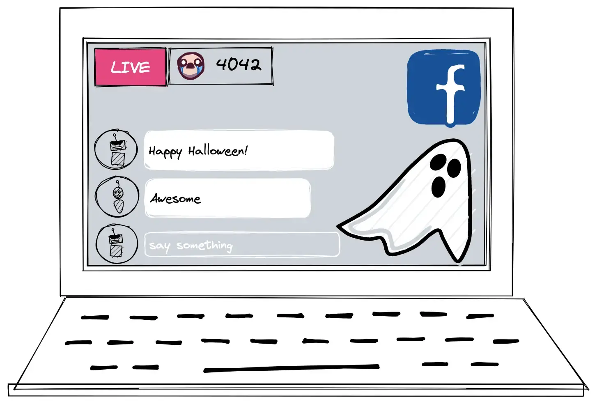
The target audience for this article falls into the following roles:
- Tech workers
- Students
- Engineering managers
The prerequisite to reading this article is fundamental knowledge of system design components. This article does not cover an in-depth guide on individual system design components.
Disclaimer: The system design questions are subjective. This article is written based on the research I have done on the topic and might differ from real-world implementations. Feel free to share your feedback and ask questions in the comments.
Download my system design playbook for free on newsletter signup:
How Does the Live Comment Work?
At a high level, the Live Comment service performs the following operations:
- gateway server fans out live comments to the clients through server-sent events (SSE)
- the client subscribes to a live video on the gateway server over Hypertext Transfer Protocol (HTTP)
- in-memory subscription store on the gateway server keeps the viewership associativity
- gateway server subscribes to a live video on the endpoint store
- endpoint store keeps the set of gateway servers subscribed to a particular live video
- heartbeat signal or time to live (TTL) on keys on the subscription store can be used to drain the inactive SSE connections
- ending of a live video can trigger an update on the endpoint store
- dispatcher broadcasts the live comments to the dispatcher in peer data centers
What is a Live Video?
Live video is the streaming of video over the internet in real-time without prior recording and storage. Television broadcasts, video game streams, and social media videos are often live-streamed 1.
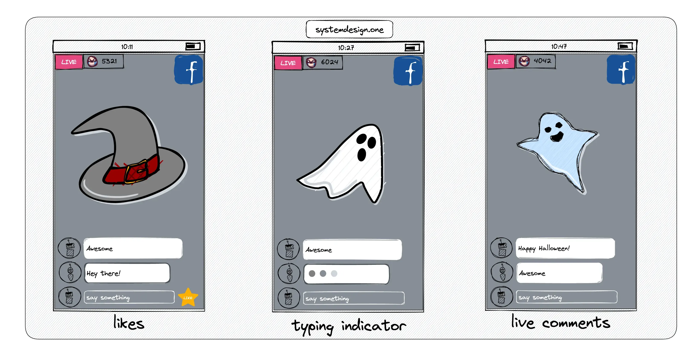
Live video is different from regular videos because live video results in spiky traffic patterns. Usually, Live videos are more engaging and tend to be watched thrice more than regular videos. On top of that, social networks such as Facebook show live videos at the top of the newsfeed, thereby increasing the probability of live videos being watched by the users (clients) 2.
What are Live Comments?
Real-time experience makes the platform feel like a place of activity for the clients 3. Live commenting is a feature that allows clients to publish real-time comments on live videos. The live comments are usually a mixture of feedback from the clients on the live video or casual conversations between clients. Besides, live comments enable the streamer of the live video to engage with the clients during the live video broadcast.
Terminology
The following terminology might be helpful for you:
- Node: a server that provides functionality to other services
- Data replication: a technique of storing multiple copies of the same data on different nodes to improve the availability and durability of the system
- Data partitioning: a technique of distributing data across multiple nodes to improve the performance and scalability of the system
- API: a software intermediary that allows two services to talk with each other
- Fault tolerance: the ability of a service to recover from a failure without losing data
- High availability: the ability of a service to remain reachable and not lose data even when a failure occurs
Questions to ask the Interviewer
Candidate
- What are the primary use cases of the system?
- Do live commenting service support only text?
- Are the clients distributed across the globe?
- What is the amount of Daily Active Users (DAU)?
- What is the system’s total number of daily live videos?
- What is the average amount of live comments on a live video?
- What is the anticipated read: write ratio of live comments?
- What is the peak amount of concurrent users watching the same live video?
- Should the comments on streamed videos be archived to save storage?
Interviewer
- Clients can interact with each other in real-time over live comments on a Facebook live video
- Yes
- Yes
- 100 million DAU
- 200 million daily live videos
- 10
- 100: 1
- 80 million
- Yes, there is no need to support the replay of live comments
Requirements
Functional Requirements
- The publishers (client) can write real-time live comments on a Facebook live video
- The receivers (clients) watching the Facebook live video should be able to view the live comments in real time
- The receiver should be able to view an active real-time feed of live comments on each live video while scrolling across the Facebook newsfeed
- The typing indicators (somebody is typing feature) should be supported
- The total count of comments should be visible on each live video
- The live comment service should handle clients across the globe
- The live comment service should handle millions of concurrent clients
Non-Functional Requirements
- Highly availability
- Fault-tolerant
- Low latency
- Scalability
- Eventual consistency
Live Commenting API Design
The real-time Application Programming Interface (API) can be implemented for faster user experiences and instant delivery of live comments. The average time for a human to blink is 100 ms, and the average reaction time for a human is around 250 ms. Therefore, the actions performed within 250 ms are perceived as real-time or live 4, 5. An event-driven architecture can be used to build a real-time data platform. The general subscription models for an API are the following 6:
- push-based (server-initiated)
- pull-based (client-initiated)
The popular protocols for an event-driven API are the following 6:
| Protocol | Description | Use Cases | Subscription Model |
|---|---|---|---|
| Webhook | HTTP-based callback function that allows lightweight, event-driven infrequent communication between APIs | trigger automation workflows | push-based |
| WebSub | communication channel for frequent messages between web content publishers and subscribers based on HTTP webhooks | news aggregator platforms, stock exchanges, and air traffic networks | push-based |
| WebSockets | provides full-duplex communication channels over a single TCP connection with lower overhead than half-duplex alternatives such as HTTP polling | financial tickers, location-based apps, and chat solutions | pull-based |
| SSE | lightweight and subscribe-only protocol for event-driven data streams | live score updates | pull-based |
| MQTT | protocol for streaming data between devices with limited CPU power and low bandwidth networks | Internet of Things | pull-based |
The communication protocol and subscription model chosen should be ideal to build a reliable and scalable live comment service. The pull-based subscription model is the optimal choice for the delivery of live comments to the receivers for the following reasons 6:
- the receiver only needs to view the live comments when the receiver is online (connected or subscribed to the live video)
- the receiver can ignore the comments when disconnected or unsubscribed
- non-trivial to predict the total count of clients that will be subscribed to watching a live video
- the receivers will be geographically distributed across the globe
- the connection from the receiver might be unpredictable
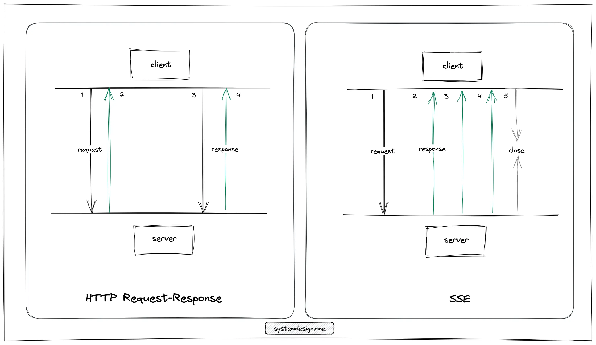
The client creates a regular HTTP long poll connection with the server with server-sent events (SSE). The server can push a continuous stream of data to the client on the same connection as events occur. The client doesn’t need to perform subsequent requests 7.
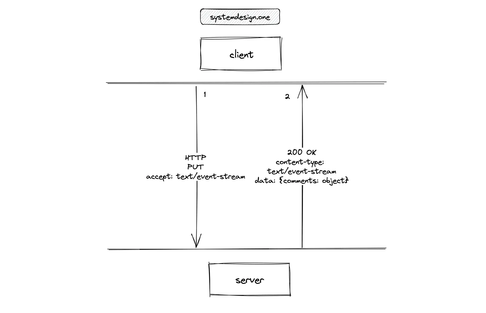
The only difference for SSE from a regular HTTP request is that the Accept header on the HTTP request holds the value text/event-stream. The EventSource interface is used by the client to receive and process server-sent events independently in text/event-stream format without closing the connection. All modern web browsers support the EventSource interface natively. The EventSource interface can be implemented on iOS and Android platforms with lightweight libraries 7, 8.
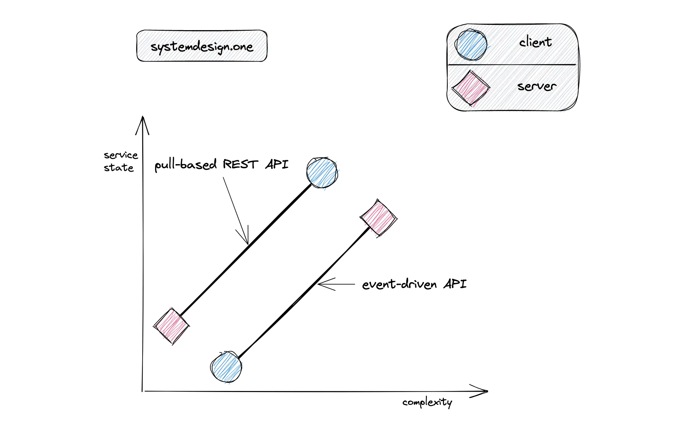
The client is responsible for maintaining the state and execution of requests in the Representational state transfer (REST) paradigm. On the contrary, the server is responsible for maintaining the state and pushing updates to the client in an event-driven architecture. In layman’s terms, the complexity of the receiver is kept minimum in an event-driven API as the receiver only has to create an SSE connection to view the live comments on a Facebook live video 6. In conclusion, SSE is the optimal protocol for the live comment service due to the following reasons 7, 8:
- SSE works over traditional HTTP
- SSE streams chunks of data over the same open HTTP connection
The predefined fields of an SSE connection are the following 6:
| Field | Description |
|---|---|
| event | the event type defined by the server |
| data | the payload of the event |
| id | ID for each event |
| retry | the client attempts to reconnect with the server after a specific timeframe if the connection was closed |
The following are the drawbacks of SSE 6:
- the data format is restricted to transporting UTF-8 messages with no support for binary data
- only up to six concurrent SSE connections can be opened per web browser on pre-HTTP/2 networks
The components in the system expose the Application Programming Interface (API) endpoints to the client through Representational State Transfer (REST). The description of HTTP Request headers is the following:
| Header | Description |
|---|---|
| accept | type of content the client can understand |
| authorization | authorize your user account |
| content-encoding | compression type used by the data payload |
| method | HTTP Verb |
| content-type | type of data format (JSON or XML) |
The description of HTTP Response headers is the following:
| Header | Description |
|---|---|
| status code | shows if the request was successful |
| content-type | type of data format |
How does the receiver subscribe to a specific live video?
The client must subscribe to a live video for viewing the live comments. The client executes an HTTP PUT request for subscribing to a live video. The PUT requests are idempotent. The PUT method is used instead of the GET method because the in-memory subscription store will be modified when a client subscribes to a live video.
|
|
The accept: text/event-stream HTTP request header indicates that the client is waiting for an open connection to the event stream from the server to fetch live comments 9. The server responds with status code 200 OK on success.
|
|
The content-type: text/event-stream HTTP response header indicates that the server established an open connection to the event stream to dispatch events to the client. The response event stream contains the live comments.
|
|
How does the receiver unsubscribe from a live video?
The client should unsubscribe from a live video to stop receiving live comments. The client executes an HTTP DELETE request for unsubscribing from a live video 9. The DELETE requests are idempotent.
|
|
The server responds with status code 200 OK on success.
|
|
The server responds with status code 204 No Content when the client successfully unsubscribes from a live video. The HTTP response body will be empty.
|
|
How does the client publish a live comment?
The client executes an HTTP POST request to publish a live comment.
|
|
The server responds with status code 200 OK on success.
|
|
Alternatively, the server responds with status code 201 created on success.
|
|
The server responds with status code 400 bad request for indicating a failed request due to an invalid request payload from the client.
|
|
The client receives a status code 403 forbidden when the client has valid credentials but insufficient privileges to act on the resource.
|
|
Further System Design Learning Resources
Download my system design playbook for free on newsletter signup:
Live Comment System Database Design
The live comment service is a read-heavy system. In simple words, the predominant usage pattern is the client viewing live comments.
Database Schema Design
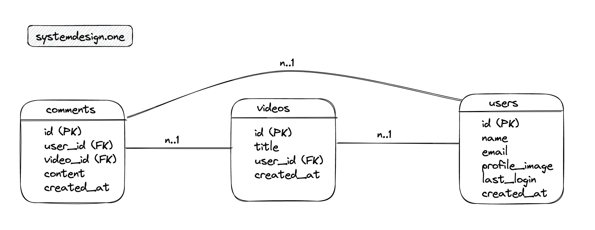
The major entities of the relational database are the comments table, the videos table, and the users table. The relationship between the users and the comments tables is 1-to-many. The relationship between the videos and the comments tables is 1-to-many. The relationship between the users and videos tables is 1-to-many.
Comments table
| Column | Description |
|---|---|
| id | ID to identify the comment |
| user_id (Foreign key) | publisher of the comment |
| video_id (Foreign key) | ID of the associated video |
| content | content of the comment |
| created_at | timestamp of creation |
Videos table
| Column | Description |
|---|---|
| id | identifier of the video |
| title | title of the video |
| user_id (Foreign key) | streamer of the live video |
| created_at | timestamp of creation |
Users table
| Column | Description |
|---|---|
| id | identifier of the user |
| name | name of the user |
| email of the user | |
| profile_image | URL to fetch the profile image of user |
| last_login | last login timestamp of the user |
| created_at | timestamp of user account creation |
SQL
Structured Query Language (SQL) is a domain-specific language for managing data stored in the relational database management system.
Write a SQL query to fetch the latest ten comments on the live video with “35” as the video ID
|
|
Write a SQL query to insert a new live comment
|
|
Write a SQL query to fetch the total count of comments on each video
|
|
Type of Data Store
The content of live comments contains only textual data and does not include any media files. A very fast and reliable database that not only persistently store data but also access the data quickly is a key feature for building the live comment service. The persistent storage of live comments is needed to retrieve the comments at a later point in time. In addition, the data kept in persistent storage can be used for auditing purposes 10. The relational database offers well-defined structures for comments, users, and videos. The relational database will be an optimal choice when the dataset is small. However, the relational database will be a suboptimal solution for live comment service due to the following scalability limitations 5:
- the internal data structure adds delay to the data operations
- complex queries are needed to reintegrate data because of data segregation
The creation of database indexes on video_id and created_at columns will improve the performance of the read operations at the expense of slow write operations. The NoSQL database such as Apache Cassandra can be used as persistent data storage for live comments due to the following reasons 5:
- Log-structured merge-tree (LSM) based storage engine offers extremely high performance on writes
- schemaless data model reduces the overhead of joining different tables
- optimized natively for time series data
Apache Cassandra is not optimized for read operations due to the nature of the LSM-based storage engine. An in-memory database such as Redis can be used in combination with Apache Cassandra to improve the read performance and make the data storage layer scalable and performant for live comments. The geo-replication enabled Redis cache with a time to live (TTL) of 1 second can be added as a cache layer on top of Apache Cassandra to improve the read performance. In addition, live comments published on an extremely popular live video can be kept in the cache on network edges to improve the latency 10.
The sets data type in Redis can be used to efficiently store the live comments. The native deduplication logic of sets data type ensures that live comments are stored in memory without having an additional logic to prevent repeated live comments. The sorted set data type in Redis can be used for data integrity by maintaining the reverse chronological ordering of live comments. The sorted set data type can make use of the timestamp on live comments for sorting the live comments without implementing a custom sorting algorithm. The metadata of the publisher of a live comment can be stored in Redis hash data type for quick retrieval 4, 11, 5.
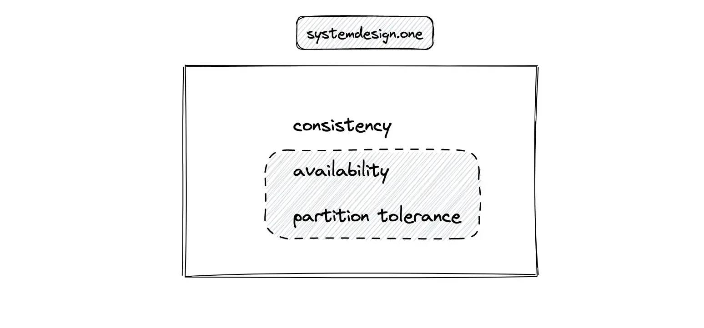
The receivers who are geographically located closer to the publisher of the live comment will see the live comment instantly while the receivers who are located on a different continent might see the live comment with a slight delay (lower than 250 ms) to favor availability and partition tolerance in the CAP theorem 10.
Capacity Planning
The rate of clients viewing the live comments is significantly higher than the rate of clients publishing the live comments. The calculated numbers are approximations. A few helpful tips on capacity planning during system design are the following:
- 1 million requests/day = 12 requests/second
- round off the numbers for quicker calculations
- write down the units while doing conversions
Traffic
The live comment service is a read-heavy system. The Daily Active Users (DAU) count is 100 million. On average, the total number of daily live videos is 200 million. A live video receives 10 comments on average.
| Description | Value |
|---|---|
| DAU (write) | 2 billion |
| QPS (write) | 12 thousand |
| read: write | 100: 1 |
| QPS (read) | 1.2 million |
Storage
The comments on a streamed live video can be archived and kept in a cold store to save storage costs. In addition, comments older than a specific time frame can be removed to minimize storage costs. The storage size of each character on a live comment is assumed to be 1 byte.
| Description | Size (bytes) |
|---|---|
| id | 20 |
| user_id | 20 |
| video_id | 20 |
| content | 2000 |
| created_at | 10 |
| Description | Calculation | Total |
|---|---|---|
| storage for a day | 12k comments/sec * 2 KB/comment * 86400 sec/day | 2 TB |
In total, a live comment is approximately 2 KB in size. The replication factor for storage can be set to three for improved durability and disaster recovery.
Bandwidth
Ingress is the network traffic that enters the server when live comments are written. Egress is the network traffic that exits the servers when live comments are viewed. The network bandwidth is spread out across the globe depending on the location of the clients.
| Description | Calculation | Total |
|---|---|---|
| Ingress | 2 billion comments/day * 2 KB/comment * 10^(-5) day/sec | 40 MB/sec |
| Egress | 200 billion comments/day * 2 KB/comment * 10^(-5) day/sec | 4 GB/sec |
Memory
The in-memory subscription store keeps the client viewership associations.
| Description | Calculation | Total |
|---|---|---|
| Subscription store | 100 million users/day * 16 bytes/user | 1.6 GB/day |
Further System Design Learning Resources
Download my system design playbook for free on newsletter signup:
Live Commenting High-Level Design
Write Globally and Read Locally
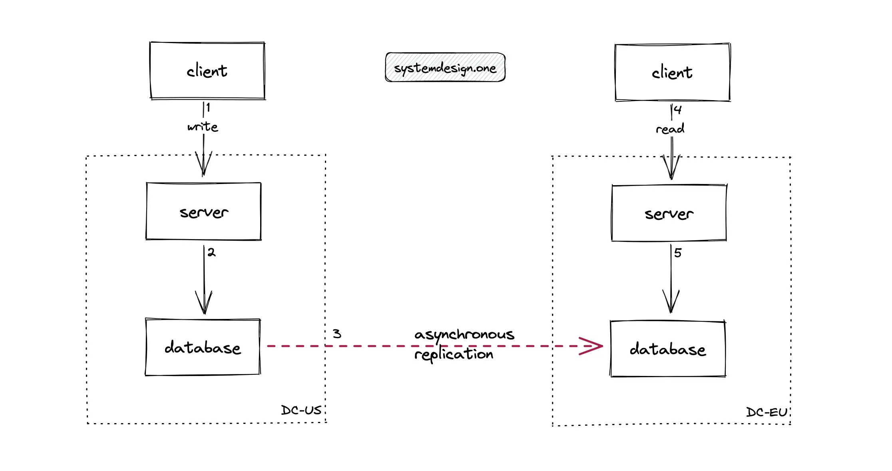
The database can be configured to asynchronously replicate the data across the database servers in data centers located on distinct continents. In layman’s terms, the data is always fetched by the server from the database servers in the local data center while the data updates are asynchronously written to database servers in data centers across the globe. This technique is known as writing globally and reading locally. For instance, when a client located in the US publishes a live comment on a Facebook live video, the clients located in Europe will not see the live comment instantaneously due to the asynchronous nature of data replication. The following are the drawbacks of writing globally and reading locally approach for implementing live comment service 12:
- significant bandwidth usage on data replication
- live comments will not be real-time due to asynchronous replication
- poor overall latency
In summary, do not use the writing globally and reading locally approach for implementing live comments.
Write Locally and Read Globally
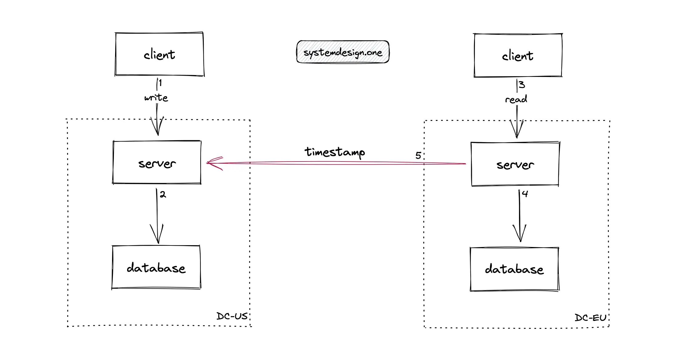
The data is always written to the database server in the local data center while the data is fetched by querying the servers in data centers across the globe as shown in Figure 8. This technique is known as the pull-based model of writing locally and reading globally. The timestamp on the live comments can be used to check if there are newer comments published since the last query execution. The server in the local data center will consolidate all the published live comments and return the response to the client. The bandwidth usage is relatively lower because the data is not replicated globally. However, the pull-based model will result in degraded latency because the server must query all the data centers across the globe on each read operation 12. In summary, do not use the pull-based model of writing locally and reading globally approach for implementing live comments.
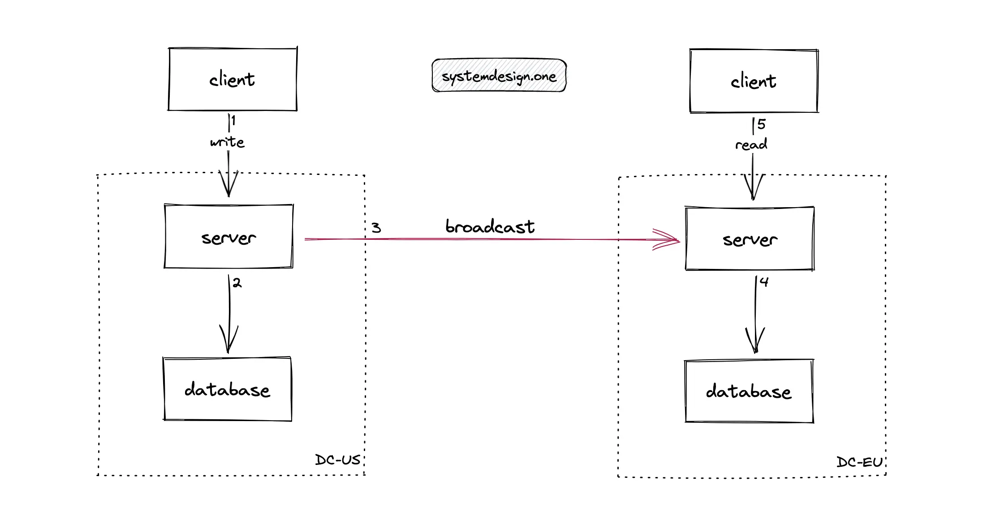
The data is always written to the distributed database server in the local data center. In Figure 9, when a client publishes a live comment on a Facebook live video, the write operation is broadcast by the server to multiple data centers across the globe. This technique is known as the push-based model of writing locally and reading globally. The push-based model of writing locally and reading globally significantly reduces the usage of expensive bandwidth and improves the latency resulting in real-time live comments 12. In summary, use the push-based model of writing locally and reading globally for implementing live comments.
Prototyping a Live Comment Service
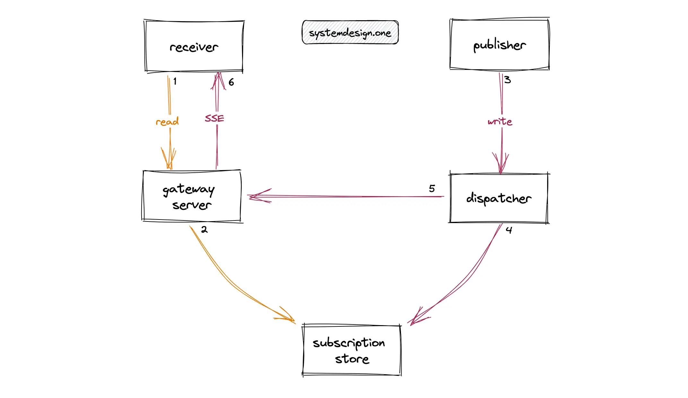
The clients watching a live video are known as receivers and the clients publishing live comments on a live video are known as publishers. The server holding the SSE connections to the receivers is known as the gateway server. A dedicated disk-based subscription store can be provisioned to persist the lifecycle of the client connections. The dispatcher is an abstraction layer for publishing data objects such as live comments or Facebook likes by the client. The following operations are performed when a live comment is published on a live video 13:
- receiver subscribes to a live video on the gateway server
- gateway server persists the metadata of the client connection in the subscription store
- the publisher publishes a live comment on a live video
- dispatcher queries the subscription store for all viewership associations on the live video
- dispatcher publishes the live comment to the gateway server
- gateway server delivers the live comment to all subscribed receivers
The gateway server maintains the SSE connections with the clients. The subscription store should be replicated at least thrice for reliability and durability 13. The subscription store will become a bottleneck to scaling the live comment service because every read and write operation on live comments must query the subscription store. On top of that, the client connections to a specific live video are short-lived because clients scroll through the Facebook newsfeed. As a result, the subscription store must be updated frequently. In summary, the current prototype will not meet the requirements of a scalable and reliable live comment service.
Distribution of Live Comments
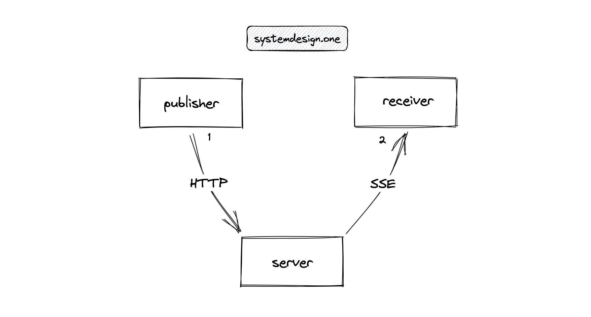
The receiver can periodically request (pull-based) the server to check whether new live comments were published. The periodic polling of the server will result in empty responses consuming unnecessary bandwidth. Moreover, the polling interval for live comments should be lower than 250 ms for a real-time experience. The increased polling frequency will highly likely overload the servers. The push-based approach using SSE persistent connections is optimal for the real-time delivery of live comments to the receivers 12.
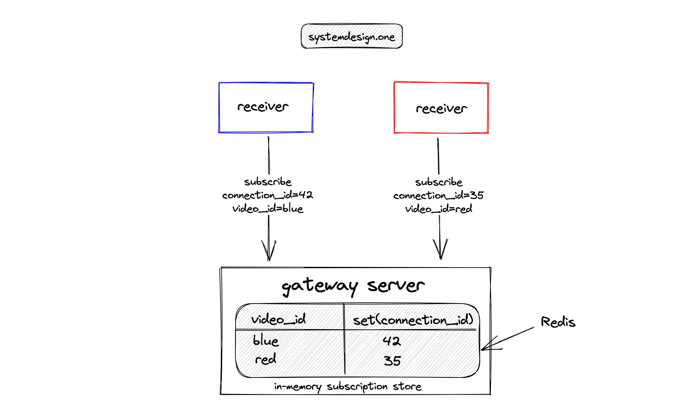
The SSE connections to the client are non-blocking fire-and-forget for improved performance 7. An in-memory subscription store using Redis can be provisioned locally on the gateway server to store the one-to-one associations between the receivers and the Facebook live video. The sets data type in Redis can be used to efficiently store the ephemeral viewership associations. The subscription store is queried to identify the receivers who should receive the live comments on a specific live video 12.
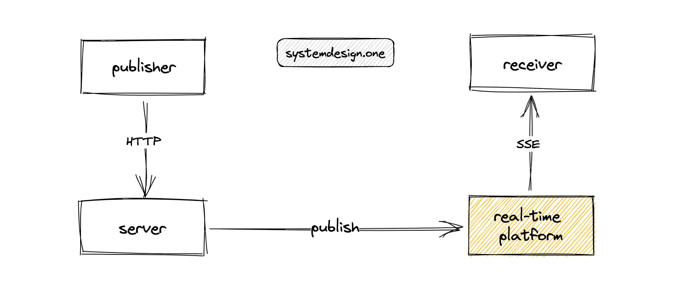
An abstract and scalable real-time platform can be built for real-time experiences such as displaying real-time presence, push notifications, Facebook likes, Facebook reactions, typing indicators, and live comments. The real-time platform can be reused across multiple platforms such as Facebook, Messenger, Instagram, Twitch, TikTok, LinkedIn, or YouTube 13. A dynamically configurable plugin system architecture should be implemented to create an abstract real-time platform. Plugins are embedded executable code for additional logic that gets invoked on distinct events such as the publishing of a live comment 3. The principle behind building a scalable distributed system is to start small and iteratively add simple layers to the architecture 7. The general guidelines for horizontally scaling a service are the following 14:
- keep the service stateless
- partition the service
- replicate the service
Live Commenting With Pub-Sub Server
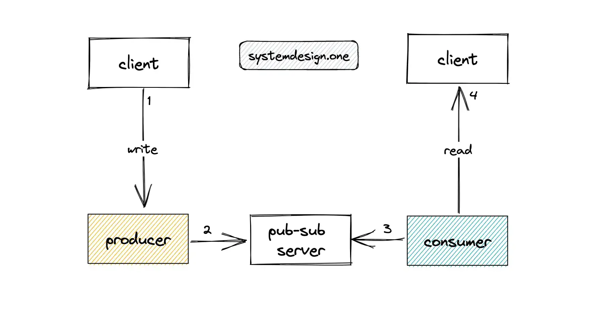
Publish-Subscribe (pub-sub) pattern allows services running on distinct technologies to communicate with each other 11. The pub-sub technique using the message bus enables a producer to send live comments (messages) to multiple consumers. The services can communicate with each other instantly without having preset intervals for polling data from relevant data sources in a reactive architecture 5.
Using Apache Kafka as the Pub-Sub Server
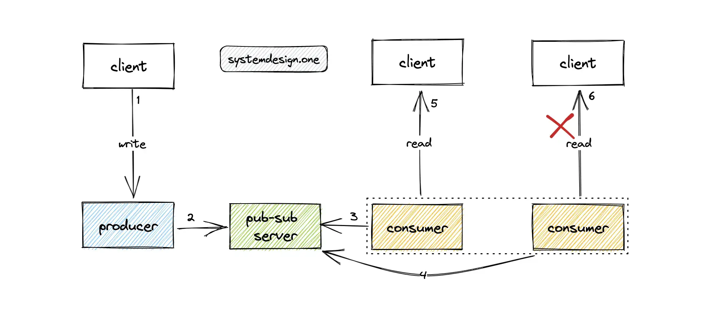
Apache Kafka is configured as the pub-sub server to decouple the producers and consumers. The live comment service can be reliably scaled through the separation of concerns. The streaming protocol of Kafka offers lower overheads per message and provides ordering guarantees, integrity guarantees, and idempotency. Besides, the Kafka streaming protocol enables sharding the data before streaming the data to consumers 6, 7. The system design of live comments is challenging for the following reasons:
- clients will continuously scroll through the Facebook newsfeed
- live videos visible on the viewport of the client will change frequently
There will be multiple receivers (consumers) watching a live video. The live comments published on the live video should be consumed by all the receivers. When the client scrolls through the Facebook newsfeed or navigates outside the comments panel, the client is not supposed to see the live comments anymore. The consumer should dynamically unsubscribe from the specific live video (Kafka topic) to stop seeing the live comments on the specific live video. However, unsubscribing from a Kafka topic is an expensive operation 15, 16. In addition, tracking the gateway servers consuming specific live videos is non-trivial resulting in oversubscription to all Kafka topics. The limitations of using Apache Kafka for building the live comment service can be summarized as the following 7:
- degraded latency because consumers use a pull-based model
- limited scalability because each consumer should subscribe to all the Kafka topics and consume all the messages
- operational complexity of Apache Kafka is relatively high
The Kafka topics can be partitioned by the stream IDs at the expense of unbalanced partitions. Consumers can subscribe to specific partitions using consistent hashing 3. Nonetheless, the consumers will not know in advance the stream IDs that the clients will be interested in. In a typical scenario, a server will have a diverse set of clients interested in almost all the live videos resulting in subscriptions to all the live videos. Apache Pulsar also runs into a similar set of challenges as Apache Kafka for the use case of live comment service 7. In summary, do not use Apache Kafka as the pub-sub server for implementing live comments.
Using Redis as the Pub-Sub Server
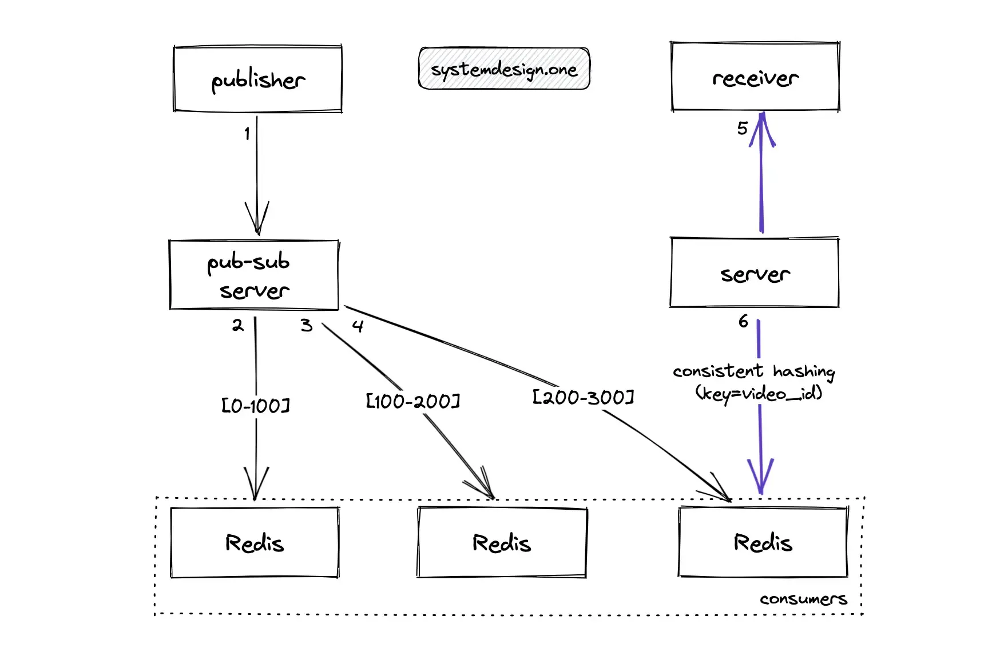
The clients must use a protocol named REdis Serialization Protocol (RESP) for communicating with the Redis server. Redis can be used as the pub-sub server to transmit live comments (messages) between nodes 4. The Redis cluster can be used to scale the pub-sub server. The Redis pub-sub server replicates every incoming message to all nodes because Redis does not know the set of clients (receivers) on a specific node resulting in degraded performance. The consistent hashing algorithm is used for load-balancing client subscriptions to live videos between a set of independent Redis nodes for improved scalability. Consistent hashing significantly reduces the movement of live connections between nodes on a node failure or node addition. In layman’s terms, the incoming messages are published to all Redis nodes but the server only listens on a small set of nodes for a specific subscription (live video) for improved scalability. The Redis replicas should be provisioned on every node to perform automatic failover when a node failure occurs 3.
A TCP connection is maintained between the producer to Redis and Redis to the consumer for delivering messages. As an unconventional workaround, the server could terminate the TCP connection between the consumer node and the pub-sub server for unsubscribing the consumer from a topic (live video) when the client scrolls through the Facebook newsfeed. The drawbacks of using the Redis pub-sub server for live comment service are the following:
- no guaranteed at least one-time message delivery
- reliability of message delivery depends on the TCP connection
- messages might get lost due to a lack of message persistence
In conclusion, do not use the Redis pub-sub server solution for implementing live comments.
Using Redis Streams as the Pub-Sub Server
The Redis stream is a data structure that can be used like an append-only log for improving the responsiveness of the system. In simple words, Redis streams are functionally very equivalent to Apache Kafka. The Redis streams as the pub-sub server offer the following benefits 17, 18, 5, 19, 20, 21:
- guaranteed at least one-time delivery of messages
- reliable messages through persistence with Append Only File (AOF) or Redis Database (RDB) persistency methods
- more tolerant to network partitions
- improved latency due to efficient in-memory storage
- relatively trivial to provision and operate
- messages can be consumed either in blocking or non-blocking methods
The Redis Sentinel or Redis Active-Active configuration provides high availability for the cluster at the expense of increased operational complexity. The Redis Sentinel is a distributed system that monitors and provides failover policies to Redis instances. Redis streams could dynamically unsubscribe consumers from a specific topic (live video). However, there is a risk of data loss in Redis streams because the data is only periodically written to disk. The memory limitation could also be a bottleneck to building a scalable live commenting service 19, 21. In conclusion, do not use Redis streams as the pub-sub server solution for implementing live comments.
An Abstract Real-Time Platform
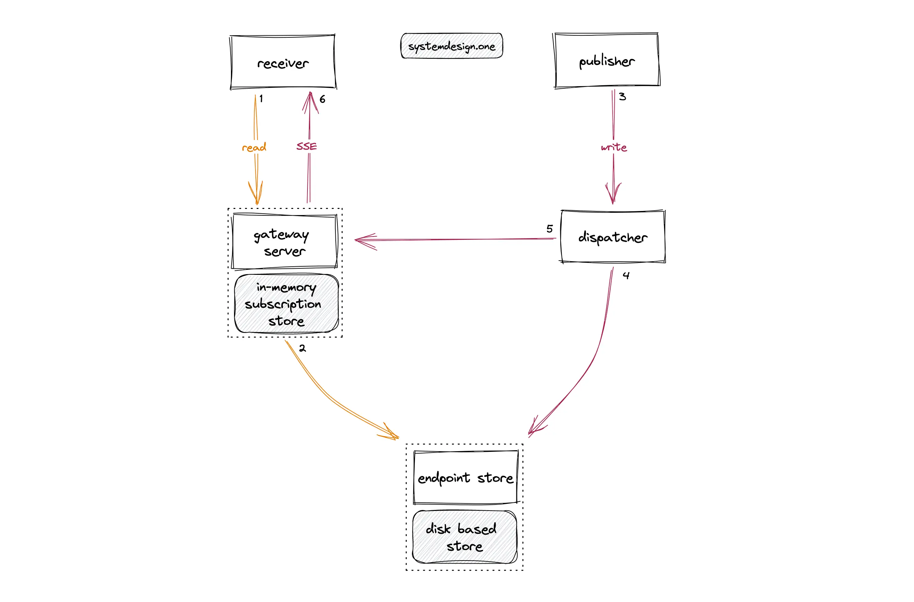
An in-memory subscription store can be provisioned using Redis on the same machine where the gateway server runs. The in-memory subscription store will hold the mapping between live videos and receivers (client connections). The gateway server can perform throttling and include additional product logic. A dedicated disk-based endpoint store can be used to identify the gateway servers interested in a specific live video. The endpoint store will contain a mapping between the live videos and a set of gateway servers. The following operations are performed when a live comment is published on a live video 13:
- receiver subscribes to a live video on the gateway server
- the gateway server updates the subscription store with viewership association and informs the endpoint store that the gateway server is interested in the specific live video
- the publisher writes a live comment on the specific live video
- dispatcher queries one of the replicas of the endpoint store to fetch the set of subscribed gateway servers
- the dispatcher forwards the live comment to the subscribed gateway servers
- the gateway server checks the local in-memory subscription store and fans out the live comment to subscribed receivers
The following operations can be executed for removing the expired records from the in-memory subscription store on the gateway server:
- the gateway server can send periodic heartbeat signals to the receivers to check if they are still connected
- Redis TTL keys can expire the subscription record when the heartbeat signals show a failure
- client-side JavaScript logic can trigger an event when the client scrolls away from the live video
The endpoint store should remove the live video only when the set of gateway servers subscribed to the live video is empty. Redis set data type allows checking the cardinality of the set in constant time complexity. The ending of a live video can trigger the expiry of the records in the disk-based endpoint store. In summary, the current architecture can satisfy the requirements of a scalable and reliable live comment service.
Further System Design Learning Resources
Download my system design playbook for free on newsletter signup:
Live Comment System Design Deep Dive
Live experiences are underpinned by real-time, event-driven APIs for meeting the requirements of clients. A real-time platform is predicated upon low latency, data integrity, fault tolerance, availability, and scalability 4.
How Does the Gateway Server Manage Client Connections?
An actor is an extremely lightweight object that can receive messages and take actions to handle the messages. The actor is decoupled from the source of the message. The actor is only responsible for recognizing the type of message received and performing the required action. A thread will be assigned to an actor when a message must be processed. The thread is released once the message is processed and the thread is assigned to the next actor. The total count of threads will be proportional to the count of CPU cores. A relatively small count of threads can handle a significant number of concurrent actors because a thread is assigned to an actor only during the execution time 7, 8, 22.
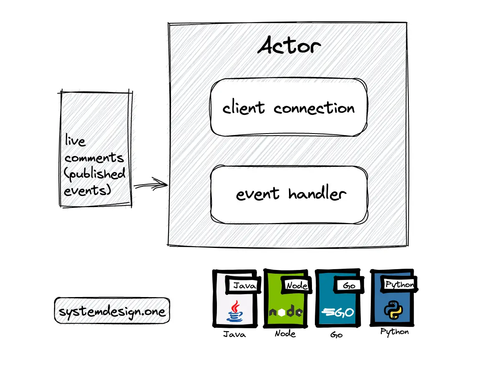
An SSE persistent client connection can be assigned to an actor. When an actor receives a message, the handler on the actor defines how the message will be published to the client connection. The actor-style programming can be implemented with actor frameworks such as Akka (Java, Scala), Pykka (Python), or Cloudi (Erlang) for building highly concurrent, distributed, and resilient message-driven applications 7, 8, 22.
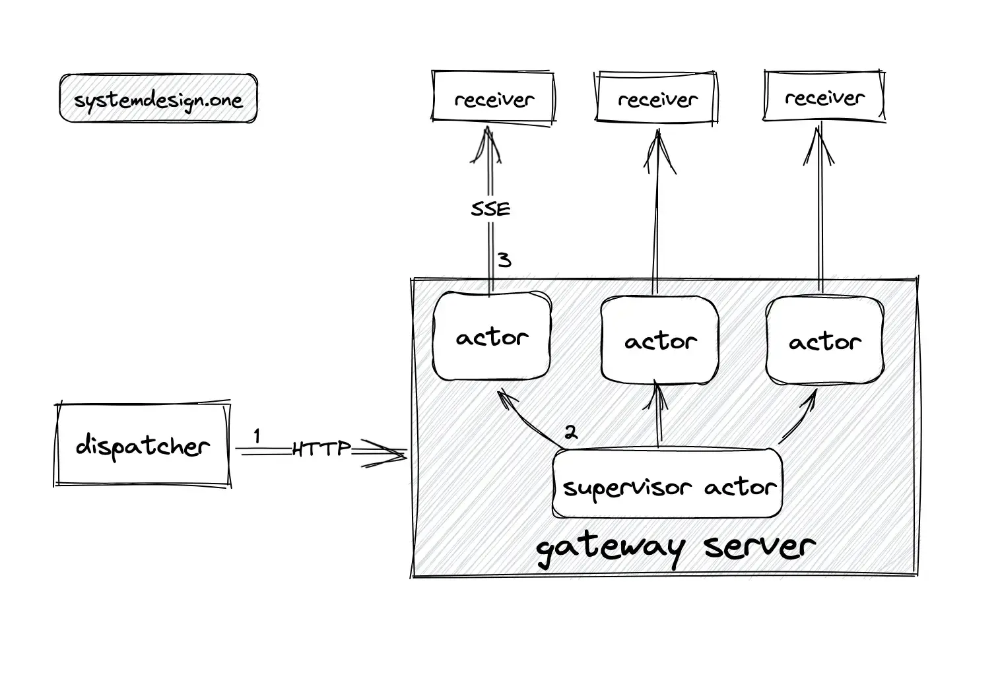
The (child) actors are managed by the supervisor actor. The following operations are executed when a live comment is published by the dispatcher 7:
- the dispatcher publishes a live comment to the supervisor actor in the gateway server over the HTTP
- the supervisor actor broadcasts the live comment to all the child actors
- child actors use the connection handle to forward the live comment to the receivers
The client (receiver) will render the received live comment on the web browser.
How to Handle Live Comments on Multiple Live Videos?
There might be multiple clients watching distinct live videos connected to the same gateway server. The actors on the gateway server should not publish the live comment on a specific live video to all the connected clients because some of the clients might be watching a different live video. In Figure 20, clients connected to the same gateway server are watching distinct live videos with live video IDs blue and red. When the client publishes a live comment on the live video with blue as the ID, only the clients watching the live video with blue as the ID should be able to view the published live comment.
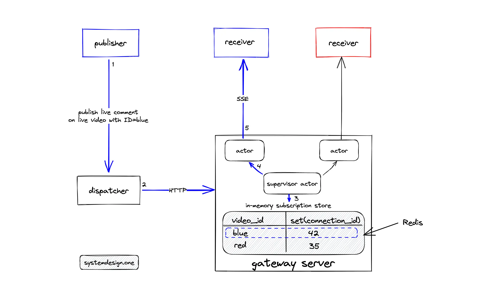
An in-memory subscription store using Redis can be provisioned to run on the same machine where the gateway server runs. The client starting to watch a live video subscribes to the specific live video on the gateway server over HTTP. The subscription store will keep an in-memory mapping between a live video and the set of receivers. An in-memory subscription store is used by the gateway server for storing viewership associativity for the following reasons 7:
- subscription data is local to clients connected to the gateway server
- the client connections are strongly tied to the lifecycle of the gateway server
In layman’s terms, an in-memory subscription store is used to identify the live video watched by each client connected to the gateway server. The following operations are executed when a client publishes a live comment on the live video with blue as the ID 7:
- the dispatcher publishes a live comment to the supervisor actor in the gateway server over the HTTP
- the supervisor actor queries the local in-memory subscription store to identify the clients subscribed to the live video with blue as the ID
- the supervisor actor broadcasts the live comment to all the subscribed child actors
- child actors use the connection handle to forward the live comment to the receivers
The local in-memory subscription store allows the efficient publishing of live comments on multiple live videos.
How to Support Massive Concurrent Clients on Multiple Live Videos?
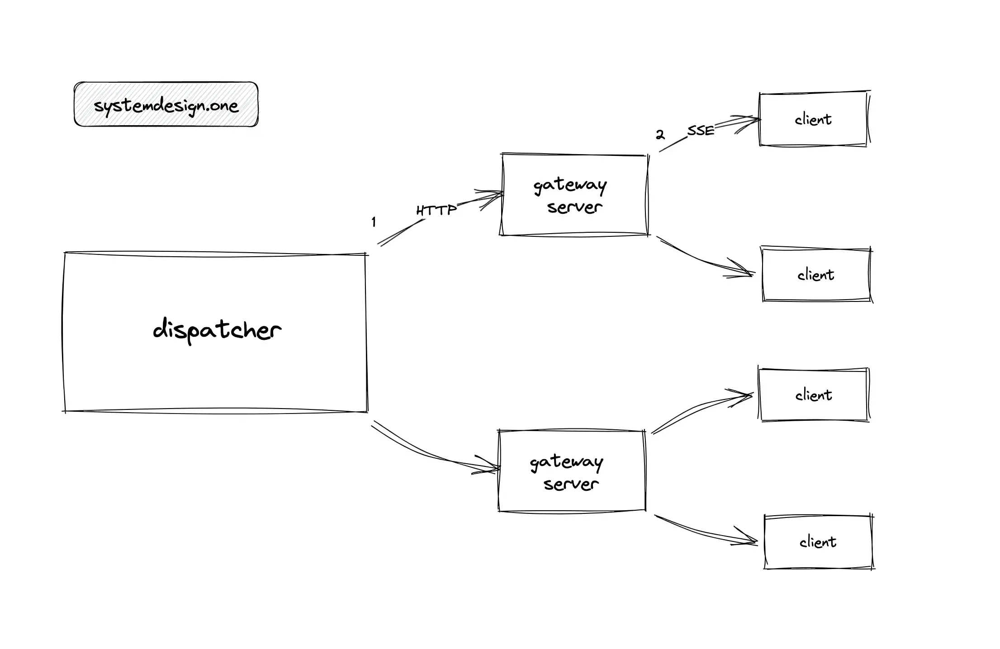
The gateway server should be partitioned by provisioning multiple instances of gateway servers to handle massive concurrent clients as shown in Figure 21. An additional service known as the dispatcher is provisioned to broadcast live comments between multiple gateway servers 7. The clients connected to a gateway server might be watching only a subset of live videos. It is inefficient for the dispatcher to broadcast the live comments on all live videos to all gateway servers because some gateway servers might be subscribed to only a subset of live videos.
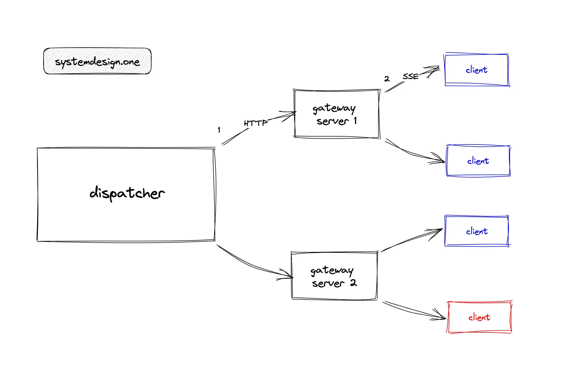
For example, in Figure 22, clients connected to gateway server 1 are only watching the live video with blue as the video ID. When the dispatcher publishes live comments on live video with red as the video ID to the gateway server 1, the published live comments will be processed and subsequently ignored by the gateway server 1 resulting in wasted computing resources. The dispatcher should not publish live comments on all live videos to all the gateway servers for improved performance 7.
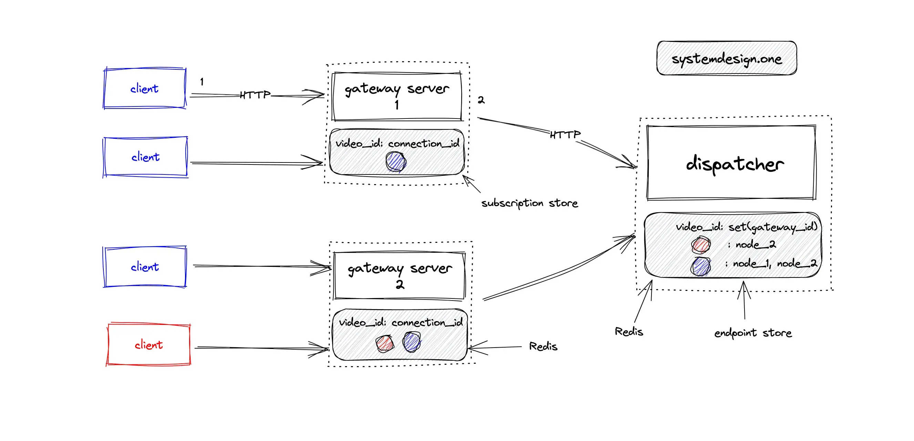
An in-memory endpoint store using Redis can be provisioned to run locally on the same machine as the dispatcher. The client starting to watch a live video subscribes on the gateway server over HTTP. The subscription store in the gateway server will keep the mapping between the specific live video and the set of receivers. The gateway server will subscribe to the specific live video on the dispatcher over HTTP. An in-memory endpoint store on the dispatcher will keep the mapping between a live video and the set of subscribed gateway servers. An in-memory endpoint store is used by the dispatcher for keeping the subscription data of the gateway servers due to the following reasons 7:
- efficiently dispatch live comments across multiple gateway servers
- identify the gateway servers subscribed to a particular live video
In layman’s terms, an in-memory endpoint store in the dispatcher is used to identify the live video subscription by the gateway servers for improved performance.
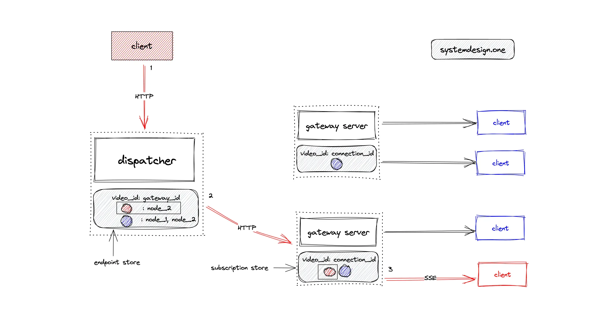
The following operations ate executed when the client publishes a live comment on the live video with red as the ID 7:
- the dispatcher queries the local in-memory endpoint store to identify the subscribed gateway servers on the live video with red as the ID
- the dispatcher publishes the live comment to the subscribed gateway servers over HTTP
- the gateway server queries the local in-memory subscription store to identify the clients subscribed to the live video with red as the ID
- the gateway server broadcasts the live comment to all the subscribed clients through SSE
The major drawback of the current architecture is that the dispatcher becomes the bottleneck for scalability. The performance of the live comment will degrade on peak load because there is only a single instance of dispatcher deployed.
Scaling Live Comments to Handle Peak Load
When an extremely high rate of live comments is published per second, the single instance of dispatcher will degrade the overall performance of the live comment service. The dispatcher can be replicated for horizontal scaling. The dispatcher should be made stateless for replicating the dispatcher. The dispatcher can become stateless by moving out gateway subscription state to an external store.
A disk-based key-value store known as the endpoint store can persist the subscription associations between a live video and the set of gateway servers. The endpoint store must be replicated for scalability and high availability. The endpoint store should only persist the gateway server subscription local to the data center. DynamoDB, Redis, or MongoDB can be used to provision the endpoint store. In addition, the endpoint store provides durability in case the dispatcher fails. Any dispatcher will be able to identify the set of subscribed gateway servers by querying the external endpoint store 7.
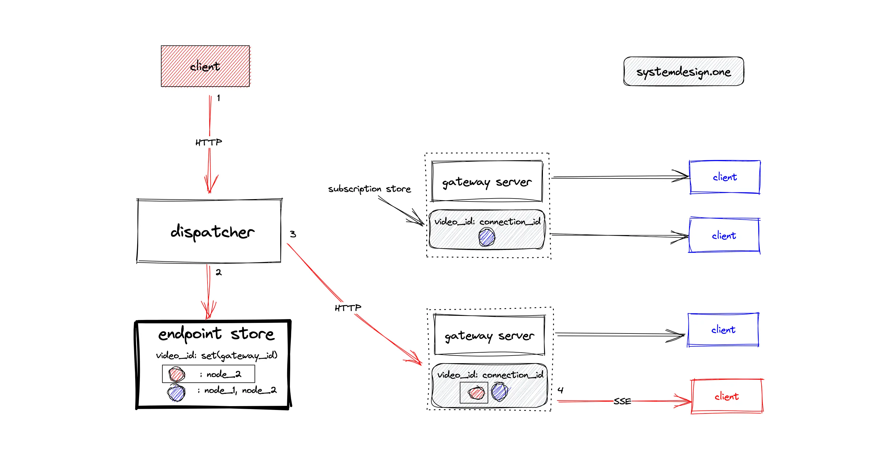
The dispatcher communicates with gateway servers over HTTP. Any dispatcher instance will be able to publish live comments to any gateway server. The following operations are executed when the client publishes a live comment on a live video with red as the ID 7:
- the dispatcher independently queries the external endpoint store to identify the set of subscribed gateway servers on the live video with red as the ID
- the dispatcher publishes the live comment to the set of subscribed gateway servers over HTTP
- the gateway server queries the local in-memory subscription store to identify the clients subscribed to the live video with red as the ID
- the gateway server broadcasts the live comment to all the subscribed clients through SSE
The endpoint store doesn’t need to be partitioned due to the small dataset.
What Is the Subscribe Workflow and Publish Workflow for Live Comments?
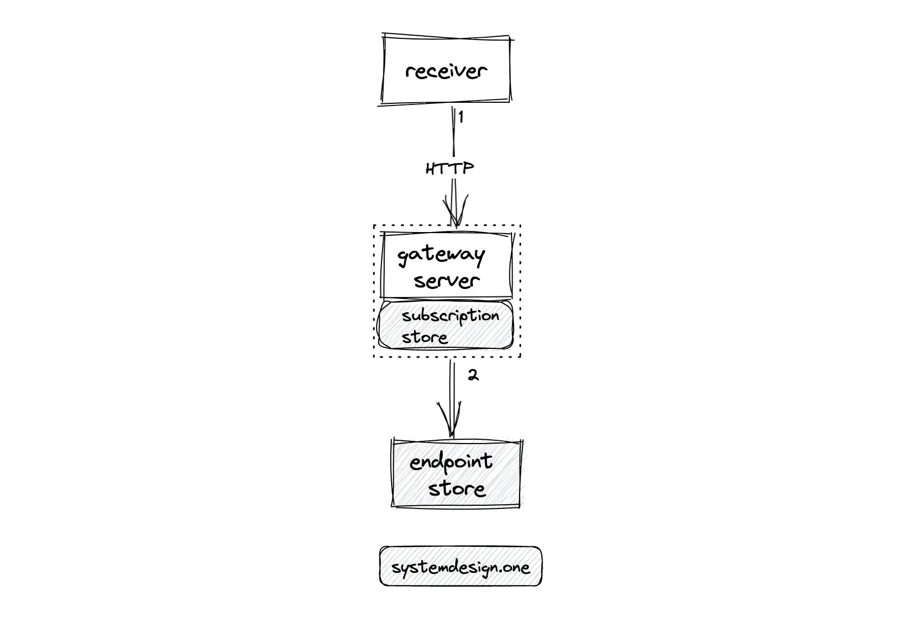
The following operations are executed for the subscription when the client starts watching a live video 7:
- the client subscribes to the gateway server over HTTP
- the gateway stores the viewership associations on the in-memory subscription store
- the gateway server makes a subscription request on the endpoint store by creating an entry on the key-value store
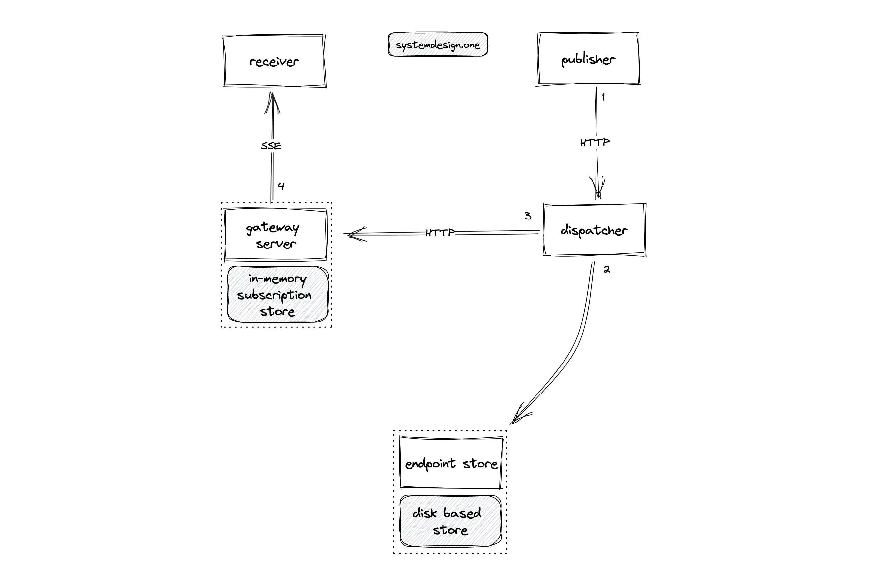
The following operations are executed when the client publishes a live comment on the live video 7:
- the load balancer distributes the live comment published by the client to any random dispatcher over HTTP
- the dispatcher queries the endpoint store for identifying the set of gateway servers subscribed to the particular live video
- the dispatcher forwards the live comment to the set of subscribed gateway servers over the HTTP
- the gateway servers query the local in-memory subscription store to identify the subscribed clients for the particular live video
- the gateway servers broadcast the live comments to the subscribed clients over SSE
How to Deploy the Live Comment Service Across Multiple Data Centers?
The live comment service should be deployed across multiple data centers (DC) for scalability and performance. There might be a scenario when no clients are watching a particular live video on some data centers. The dispatcher can query the local endpoint store to identify if there are any gateway servers subscribed to the particular live video in the local data center. The endpoint store keeps only gateway servers subscription local to the data center 7.
For instance, in Figure 28, no clients are watching the video with red as the video ID on data centers one and three. When a client publishes a live comment on the live video with red as the video ID, only the dispatcher on data center two should broadcast the live comment to the subscribed gateway servers. The dispatcher must broadcast the live comment to the dispatchers in peer data centers for ensuring that the clients subscribed to the particular live video on peer data centers receives the live comment in real-time.
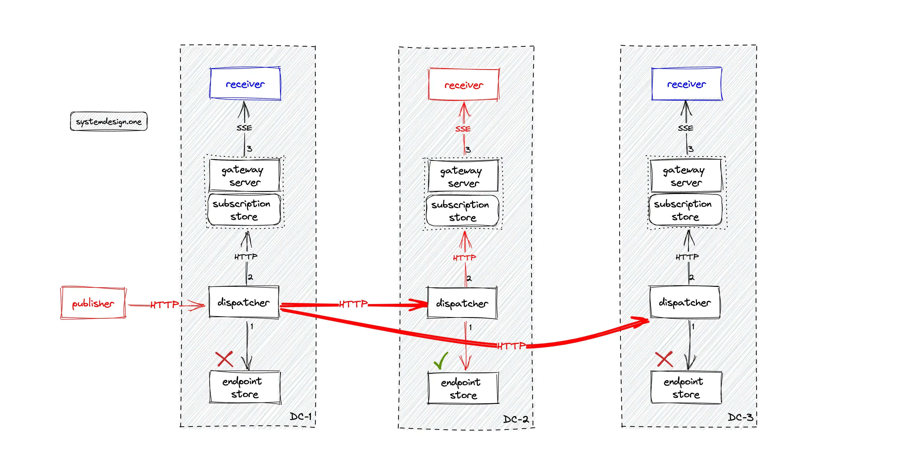
The following operations are executed when the client publishes a live comment on the live video 7:
- GeoDNS routes the live comment to a dispatcher on the data center closest to the client
- the dispatcher broadcasts the live comment to dispatchers on peer data centers over HTTP
- the dispatcher queries the local endpoint store to check if there are any subscribed gateway servers on the particular live video
- the subscribed gateway server queries the local in-memory subscription store to identify the subscribed clients
- the gateway server fans out the live comment to the subscribed clients over SSE
The current architecture is scalable and will satisfy the requirements of live comment system design. The alternative approaches for implementing cross-data center live comment service are the following:
- cross-data center subscription
- endpoint store configured for the entire region
When the client starts watching a live video, the gateway server could perform a cross-data center subscription. However, the client connections are ephemeral because the client might scroll through the Facebook newsfeed, and the gateway servers subscription should be frequently updated across cross-data centers causing poor performance and degraded latency.
Alternatively, the endpoint store can be configured globally for keeping gateway servers subscriptions across multiple data centers covering an entire region. When a key-value store such as DynamoDB is used for the endpoint store, the quorum should be tuned to higher consistency to ensure that all subscribed gateway servers will receive live comments. However, the global endpoint store will result in some clients not receiving the live comments due to eventual consistency and also cause poor latency.
How to Support the Typing Indicators on Live Video?
The JavaScript logic using event listeners on the client can trigger events when the user starts typing a live comment. The real-time platform can broadcast the typing event to the subscribed clients. The web browser on the subscribed clients can display the typing indicator.
How to Display the Total Count of Comments on Each Live Video?
HyperLogLog can be used to show the approximate count of total comments on each live video in a space-efficient manner. Redis offers out-of-the-box support for HyperLogLog probabilistic data structure.
Download my system design playbook for free on newsletter signup:
Scalability
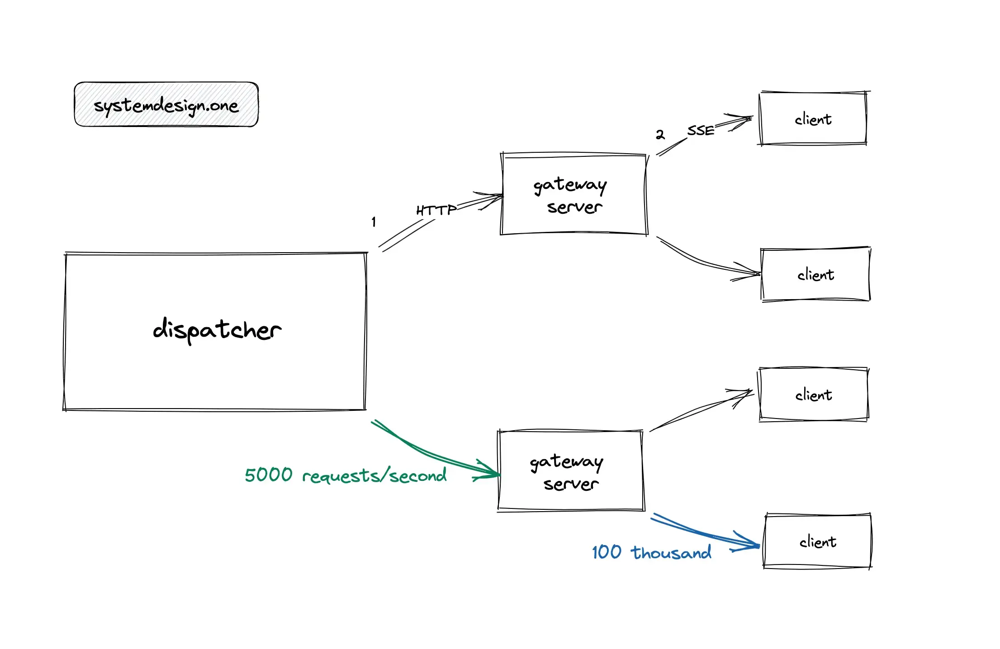
The dispatcher provisioned on a modern server can handle up to 5000 requests per second. A modern gateway server implemented with the actor model can hold up to 100 thousand concurrent SSE client connections. The multiplication factor introduced by the combination of the dispatcher and gateway servers makes the live commenting service extremely scalable. Another multiplication factor is within the gateway server using the actor model. The actor model allows the reuse of a pool of threads for increased throughput. The live comment service can be horizontally scaled by provisioning new servers 7, 22, 2.
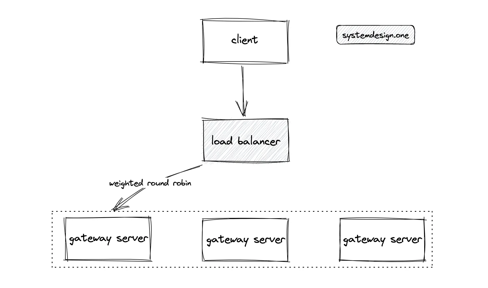
Load balancers should be introduced between different layers of the system for scalability and improved fault tolerance. The services should utilize the full capacity of the servers for scalability 23. Autoscaling can be enabled to meet elastic demand and deal with potential traffic spikes. Horizontal scaling comes with the tradeoff of a complex architecture, and increased infrastructure and maintenance costs 4.
Latency
The live comment service is deployed on multiple data centers to keep the clients closer to the servers to improve the latency. Apache Samza can be used to measure the end-to-end latency of the live comment microservice system 24. The latency of the live comment service is quite low due to the following reasons 4, 7, 23:
- there is only one key value lookup from the (disk-based) endpoint store
- there is only one in-memory lookup from the subscription store
- the network hops are very few
Additionally, Redis can be configured in the cache-aside pattern for improving the performance of endpoint store lookups because frequent disk I/O might become a bottleneck. The TTL on the Redis cache must be set to a reasonably short timeframe for cache invalidation.
Concurrency
The gateway servers can be tuned to improve the count of concurrent connections supported by the server. The following operations could be performed to improve the performance of the gateway servers 8, 23:
- increase the thread count limit by decreasing the stack size per thread
- increase the thread count limit by decreasing the memory allocated to the heap
- increase the limit on the number of open connections between the load balancer and the server
- increase the per-process file descriptor limit
- modify the kernel parameter to increase the size of the backlog of TCP connections accepted by the server
The readers-writer lock can be used for updating the set of gateway servers subscribed to a particular live video on the endpoint store. The client subscribing to a gateway server is handled by the in-memory subscription store running on Redis. The concurrency problems are automatically solved because the operations on Redis are atomic and single-threaded 5.
High Availability
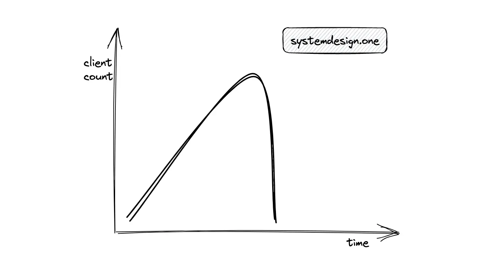
The traffic pattern for live comments on extremely popular live videos is usually very steep from the initial phase until the end of the live video and the traffic subsequently drops to the floor. In layman’s terms, the traffic pattern for live comments on a live video is spiky. When the live video becomes extremely popular, the number of concurrent clients subscribed for viewing the live comments increases causing the thundering herd problem 2. The thundering herd problem from live comments on the live video can be resolved by the following operations 13, 2:
- load balancer redirects the clients to gateway servers with free capacity
- include jitter on client reconnection logic
- implement backpressure and exponential backoff on services
- concurrent clients can perform request coalescing for fetching older comments
- predicting the load before hitting the service limits
The reconnection storms on client SSE connections to the gateway servers on deployment and scale-down events can be prevented by configuring the deployment to keep the existing servers for a few hours after the termination to allow the majority of the existing client SSE connections to close naturally. The tradeoff with the approach is relatively slower deployments 3. The services should operate in hot-hot mode with failover for high availability. The read-write operations can be handled by both instances for scalability 10.
Fault Tolerance
The live comment service should be load tested for identifying failures in capacity estimation 2. Rate limiters can be used to reduce the load from the service on service degradation or traffic overloading 3. A high level of observability through monitoring and alerting should be configured on all the services 3, 23. The live comment service must be deployed across multiple data centers in the same region and across multiple regions across the globe for improved fault tolerance. The deployment of the live comment service on multiple data centers across the globe comes with the challenge of increased engineering, DevOps efforts, and infrastructure costs 4.
Development and Deployment
Infrastructure as Code can be used to provision servers on bare metal. Continuous integration and continuous delivery/continuous deployment (CI/CD) should be set up for faster development cycles 23.
Durability
The live comments should be persisted in a NoSQL database such as Apache Cassandra for durability. The compaction process in Apache Cassandra for removing the tombstones can become a potential performance bottleneck over time. The database can be configured in different clusters for different profiles of data usage to overcome the limitation. For example, different replication rules can be set for different regulatory requirements (HIPAA, GDPR). Database snapshots must be taken at periodic intervals for data recovery. The data can be replicated on multiple hyper scalers within the same region for durability 10.
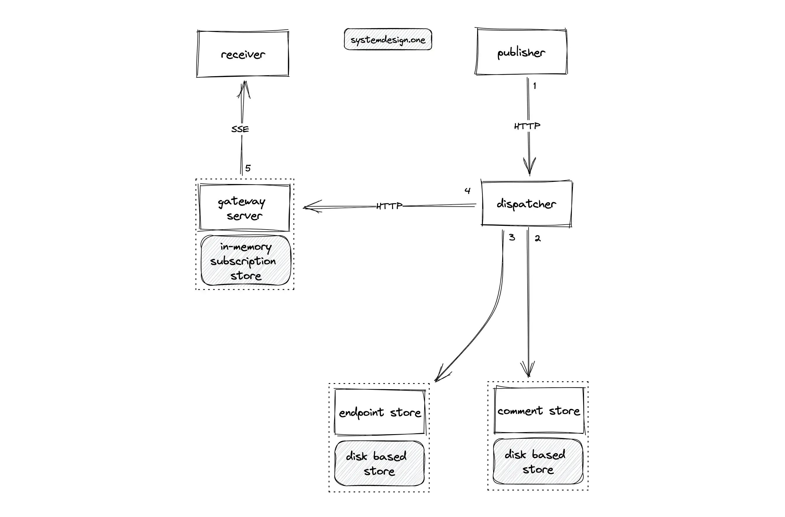
The following operations are executed when the client publishes a live comment on the live video:
- the load balancer distributes the live comment published by the client to any random dispatcher over HTTP
- the dispatcher writes the live comment on the comment store (NoSQL) for persistent storage
- the dispatcher queries the endpoint store for identifying the set of gateway servers subscribed to the particular live video
- the dispatcher forwards the live comment to the set of subscribed gateway servers over the HTTP
- the gateway servers query the local in-memory subscription store to identify the subscribed clients for the particular live video
- the gateway servers broadcast the live comments to the subscribed clients over SSE
Operational Complexity
Fully managed services hosted on hyper scalers like AWS can reduce the operational complexity of the live comment service. Alternatively, the dispatcher in the live comment service can be implemented with serverless functions. The benefits of using serverless functions are the following 4:
- no infrastructure maintenance
- reduced operational costs
- scalability and availability
- reduced latency
Summary
The live comment is a popular system design interview question. The real-time platform built for publishing live comments can display Facebook reactions, likes, concurrent viewer counts, user presence status, online polls, or seen receipts.
What to learn next?
Download my system design playbook for free on newsletter signup:
License
CC BY-NC-ND 4.0: This license allows reusers to copy and distribute the content in this article in any medium or format in unadapted form only, for noncommercial purposes, and only so long as attribution is given to the creator. The original article must be backlinked.
References
-
What is live streaming?, cloudflare.com ↩︎
-
Todd Hoff, How Facebook Live Streams To 800,000 Simultaneous Viewers (2016), highscalability.com ↩︎
-
Dima Zabello, Kyle Maxwell, and Saurabh Sharma, Reddit’s new real-time service, reddit.com ↩︎
-
Matthew O’Riordan, Using Serverless WebSockets to Enable Real-Time Messaging (2022), infoq.com ↩︎
-
Fernando Doglio, Using Redis for Chat and Messaging (2022), memurai.com ↩︎
-
Matthew O’Riordan, The Challenges of Building a Reliable Real-Time Event-Driven Ecosystem (2020), infoq.com ↩︎
-
Akhilesh Gupta, Streaming a Million Likes/Second: Real-Time Interactions on Live Video, infoq.com ↩︎
-
Akhilesh Gupta, Instant Messaging at LinkedIn: Scaling to Hundreds of Thousands of Persistent Connections on One Machine (2016), engineering.linkedin.com ↩︎
-
Using server-sent events, mozilla.org ↩︎
-
Todd Greene, Efficiently Operating a Mass Real-time Data Infrastructure (2020), AWS Events ↩︎
-
Ajeet Raina, How to build a Chat application using Redis, developer.redis.com ↩︎
-
Ken Deeter, Live Commenting: Behind the Scenes (2011), engineering.fb.com ↩︎
-
Jeff Barber, Building Real-Time Infrastructure at Facebook (2017), usenix.org ↩︎
-
Web Scalability for Startup Engineers by Artur Ejsmont (2015) ↩︎
-
Offsets retention minutes in Kafka, kafka.apache.org ↩︎
-
Manage consumer groups in Kafka, docs.confluent.io ↩︎
-
Redis Streams, redis.io ↩︎
-
Redis Streams Explained (2021), youtube.com ↩︎
-
Fernando Doglio, Apache Kafka versus Redis Streams (2021), memurai.com ↩︎
-
Redis persistence, redis.io ↩︎
-
Antirez, Streams: a new general purpose data structure in Redis, antirez.com ↩︎
-
Akhilesh Gupta, Now You See Me, Now You Don’t: LinkedIn’s Real-Time Presence Platform (2018), engineering.linkedin.com ↩︎
-
Todd Hoff, Justin.Tv’s Live Video Broadcasting Architecture (2010), highscalability.com ↩︎
-
Max Wolffe, Samza Aeon: Latency Insights for Asynchronous One-Way Flows (2018), engineering.linkedin.com ↩︎